Section 3.1 Double Integrals
Subsection 3.1.1 Vertical Slices
Suppose that you want to compute the mass of a plate that fills the region \(\cR\) in the \(xy\)-plane. Suppose further that the density of the plate, say in kilograms per square meter, depends on position. Call the density \(f(x,y)\text{.}\) For simplicity we'll assume that \(\cR\) is the region between the bottom curve \(y=B(x)\) and the top curve \(y=T(x)\) with \(x\) running from \(a\) to \(b\text{.}\) That is,
We'll shortly express that mass as a two dimensional integral. As a warmup, recall the procedure that we used to set up a (one dimensional) integral representing the area of \(\cR\) in Example 1.5.1 of the CLP-2 text.
- Pick a natural number \(n\) (that we will later send to infinity), and then
-
subdivide \(\cR\) into \(n\) narrow vertical slices, each of width \(\De x=\frac{b-a}{n}\text{.}\) Denote by \(x_i = a + i\,\De x\) the \(x\)-coordinate of the right hand edge of slice number \(i\text{.}\)
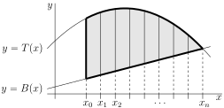 -
For each \(i=1,2,\dots,n\text{,}\) slice number \(i\) has \(x\) running from \(x_{i-1}\) to \(x_i\text{.}\) We approximate its area by the area of a rectangle. We pick a number \(x_i^*\) between \(x_{i-1}\) and \(x_i\) and approximate the slice by a rectangle whose top is at \(y=T(x_i^*)\) and whose bottom is at \(y=B(x_i^*)\text{.}\) The rectangle is outlined in blue in the figure below.
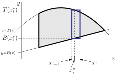 - Thus the area of slice \(i\) is approximately \(\big[T(x_i^*)-B(x_i^*)\big]\De x\text{.}\)
- So the Riemann sum approximation of the area of \(\cR\) is\begin{align*} \text{Area} &\approx \sum_{i=1}^n \big[T(x_i^*)-B(x_i^*)\big]\De x \end{align*}
- By taking the limit as \(n \to \infty\) (i.e. taking the limit as the width of the rectangles goes to zero), we convert the Riemann sum into a definite integral (see Definition 1.1.9 in the CLP-2 text) and at the same time our approximation of the area becomes the exact area:\begin{gather*} \text{Area} =\lim_{n\rightarrow\infty}\sum_{i=1}^n \big[T(x_i^*)-B(x_i^*)\big]\De x =\int_a^b \big[T(x)-B(x)\big]\dee{x} \end{gather*}
Now we can expand that procedure to yield the mass of \(\cR\) rather than the area of \(\cR\text{.}\) We just have to replace our approximation \(\big[T(x_i^*)-B(x_i^*)\big]\De x\) of the area of slice \(i\) by an approximation to the mass of slice \(i\text{.}\) To do so, we
- Pick a natural number \(m\) (that we will later send to infinity), and then
-
subdivide slice number \(i\) into \(m\) tiny rectangles, each of width \(\De x\) and of height \(\De y=\frac{1}{m}\big[T(x_i^*)-B(x_i^*)\big]\text{.}\) Denote by \(y_j = B(x_i^*) + j\,\De y\) the \(y\)-coordinate of the top of rectangle number \(j\text{.}\)
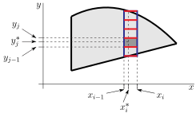 - At this point we approximate the density inside each rectangle by a constant. For each \(j=1,2,\dots,m\text{,}\) rectangle number \(j\) has \(y\) running from \(y_{j-1}\) to \(y_j\text{.}\) We pick a number \(y_j^*\) between \(y_{j-1}\) and \(y_j\) and approximate the density on rectangle number \(j\) in slice number \(i\) by the constant \(f\big(x_i^*,y_j^*\big)\text{.}\)
- Thus the mass of rectangle number \(j\) in slice number \(i\) is approximately \(f\big(x_i^*,y_j^*\big)\,\De x\,\De y\text{.}\)
- So the Riemann sum approximation of the mass of slice number \(i\) is\begin{align*} \text{Mass of slice } i &\approx \sum_{j=1}^m f\big(x_i^*,y_j^*\big)\,\De x\,\De y \end{align*}Note that the \(y_j^*\)'s depend on \(i\) and \(m\text{.}\)
- By taking the limit as \(m \to \infty\) (i.e. taking the limit as the height of the rectangles goes to zero), we convert the Riemann sum into a definite integral:\begin{align*} \text{Mass of slice } i &\approx \De x \int_{B(x_i^*)}^{T(x_i^*)} f\big(x_i^*,y\big)\,\dee{y} = F(x_i^*)\,\De x \end{align*}where\begin{equation*} F(x) = \int_{B(x)}^{T(x)} f\big(x,y\big)\,\dee{y} \end{equation*}Notice that, while we started with the density \(f(x,y)\) being a function of both \(x\) and \(y\text{,}\) by taking the limit of this Riemann sum, we have “integrated out” the dependence on \(y\text{.}\) As a result, \(F(x)\) is a function of \(x\) only, not of \(x\) and \(y\text{.}\)
- Finally taking the limit as \(n \to \infty\) (i.e. taking the limit as the slice width goes to zero), we get\begin{align*} \text{Mass} &=\lim_{n\rightarrow\infty}\sum_{i=1}^n \De x \int_{B(x_i^*)}^{T(x_i^*)} f\big(x_i^*,y\big)\,\dee{y} = \lim_{n\rightarrow\infty}\sum_{i=1}^n F(x_i^*)\,\De x \end{align*}Now we are back in familiar 1-variable territory. The sum \(\sum\limits_{i=1}^n F(x_i^*)\,\De x\) is a Riemann sum approximation to the integral \(\int_a^b F(x)\,\dee{x}\text{.}\) So\begin{align*} \text{Mass} &= \int_a^b F(x)\,\dee{x} =\int_a^b \left[\int_{B(x)}^{T(x)} f\big(x,y\big)\,\dee{y}\right]\dee{x} \end{align*}
This is our first double integral. There are a couple of different standard notations for this integral.
Definition 3.1.1.
The last three integrals here are called iterated integrals, for obvious reasons.
Note that
-
to evaluate the integral \(\displaystyle\int_a^b \int_{B(x)}^{T(x)} f\big(x,y\big)\,\dee{y}\,\dee{x}\text{,}\)
- first evaluate the inside integral \(\int_{B(x)}^{T(x)} f\big(x,y\big)\,\dee{y}\) using the inside limits of integration, and by treating \(x\) as a constant and using standard single variable integration techniques, such as those in the CLP-2 text. The result of the inside integral is a function of \(x\) only. Call it \(F(x)\text{.}\)
- Then evaluate the outside integral \(\int_a^b F(x)\,\dee{x}\text{,}\) whose integrand is the answer to the inside integral. Again, this integral is evaluated using standard single variable integration techniques.
-
To evaluate the integral \(\displaystyle\int_a^b \dee{x} \int_{B(x)}^{T(x)} \dee{y}\, f\big(x,y\big)\text{,}\)
- first evaluate the inside integral \(\int_{B(x)}^{T(x)} \dee{y}\, f\big(x,y\big)\) using the limits of integration that are directly beside the \(\dee{y}\text{.}\) Indeed the \(\dee{y}\) is written directly beside \(\int_{B(x)}^{T(x)}\) to make it clear that the limits of integration \(B(x)\) and \(T(x)\) are for the \(y\)-integral. In the past you probably wrote this integral as \(\int_{B(x)}^{T(x)} f\big(x,y\big)\ \dee{y}\text{.}\) The result of the inside integral is again a function of \(x\) only. Call it \(F(x)\text{.}\)
- Then evaluate the outside integral \(\int_a^b \dee{x}\,F(x)\text{,}\) whose integrand is the answer to the inside integral and whose limits of integration are directly beside the \(\dee{x}\text{.}\)
At this point you may be wondering “Do we always have to use vertical slices?” and “Do we always have to integrate with respect to \(y\) first?” The answer is “no”. This brings us to consider “horizontal slices”.
Subsection 3.1.2 Horizontal Slices
We found, when computing areas of regions in the \(xy\)-plane, that it is often advantageous to use horizontal slices, rather than vertical slices. See, for example, Example 1.5.4 in the CLP-2 text. The same is true when setting up multidimensional integrals. So we now repeat the setup procedure of the last section, but starting with horizontal slices, rather than vertical slices. This procedure will be useful when dealing with regions of the form
Here \(L(y)\) (“\(L\)” stands for “left”) is the smallest 1 allowed value of \(x\text{,}\) when the \(y\)-coordinate is \(y\text{,}\) and \(R(y)\) (“\(R\)” stands for “right”) is the largest allowed value of \(x\text{,}\) when the \(y\)-coordinate is \(y\text{.}\) Suppose that we wish to evaluate the mass of a plate that fills the region \(\cR\text{,}\) and that the density of the plate is \(f(x,y)\text{.}\) We follow essentially the same the procedure as we used with vertical slices, but with the roles of \(x\) and \(y\) swapped.
- Pick a natural number \(n\) (that we will later send to infinity). Then
- subdivide the interval \(c\le y\le d\) into \(n\) narrow subintervals, each of width \(\De y=\frac{d-c}{n}\text{.}\) Each subinterval cuts a thin horizontal slice from the region (see the figure below).
- We approximate slice number \(i\) by a thin horizontal rectangle (indicated by the long darker gray rectangle in the figure below). On this slice, the \(y\)-coordinate runs over a very narrow range. We pick a number \(y_i^*\text{,}\) somewhere in that range. We approximate slice \(i\) by a rectangle whose left side is at \(x=L(y_i^*)\) and whose right side is at \(x=R(y_i^*)\text{.}\)
- If we were computing the area of \(\cR\text{,}\) we would now approximate the area of slice \(i\) by \(\big[R(x_i^*)-L(x_i^*)\big]\De y\text{,}\) which is the area of the rectangle with width \(\big[R(x_i^*)-L(x_i^*)\big]\) and height \(\De y\text{.}\)
-
To get the mass, just as we did above with vertical slices, we
- pick another natural number \(m\) (that we will later send to infinity), and then
- subdivide slice number \(i\) into \(m\) tiny rectangles, each of height \(\De y\) and of width \(\De x=\frac{1}{m}\big[R(y_i^*)-L(y_i^*)\big]\text{.}\)
-
For each \(j=1,2,\dots,m\text{,}\) rectangle number \(j\) has \(x\) running over a very narrow range. We pick a number \(x_j^*\) somewhere in that range. See the small black rectangle in the figure below.
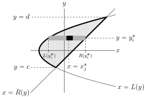Here is a magnified sketch of slice number \(i\)
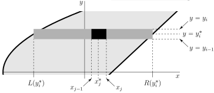 - On rectangle number \(j\) in slice number \(i\text{,}\) we approximate the density by \(f\big(x_j^*,y_i^*\big)\text{,}\) giving us that the mass of rectangle number \(j\) in slice number \(i\) is approximately \(f\big(x_j^*,y_i^*\big)\,\De x\,\De y\text{.}\)
- So the Riemann sum approximation of the mass of (horizontal) slice number \(i\) is\begin{align*} \text{Mass of slice } i &\approx \sum_{j=1}^m f\big(x_j^*,y_i^*\big)\,\De x\,\De y \end{align*}
- By taking the limit as \(m \to \infty\) (i.e. taking the limit as the width of the rectangles goes to zero), we convert the Riemann sum into a definite integral:\begin{align*} \text{Mass of slice }i &\approx \De y \int_{L(y_i^*)}^{R(y_i^*)} f\big(x,y_i^*\big)\,\dee{x} = F(y_i^*)\,\De y \end{align*}where\begin{equation*} F(y) = \int_{L(y)}^{R(y)} f\big(x,y\big)\,\dee{x} \end{equation*}Observe that, as \(x\) has been integrated out, \(F(y)\) is a function of \(y\) only, not of \(x\) and \(y\text{.}\)
- Finally taking the limit as \(n \to \infty\) (i.e. taking the limit as the slice width goes to zero), we get\begin{align*} \text{Mass} &=\lim_{n\rightarrow\infty}\sum_{i=1}^n \De y \int_{L(y_i^*)}^{R(y_i^*)} f\big(x,y_i^*\big)\,\dee{x} = \lim_{n\rightarrow\infty}\sum_{i=1}^n F(y_i^*)\,\De y \end{align*}Now \(\sum\limits_{i=1}^n F(y_i^*)\,\De y\) is a Riemann sum approximation to the integral \(\int_c^d F(y)\,\dee{y}\text{.}\) So\begin{align*} \text{Mass} &= \int_c^d F(y)\,\dee{y} =\int_c^d \left[\int_{L(y)}^{R(y)} f\big(x,y\big)\,\dee{x}\right]\dee{y} \end{align*}
The standard notations of Notation 3.1.1 also apply to this integral.
Definition 3.1.2.
Note that
-
to evaluate the integral \(\displaystyle\int_c^d \int_{L(y)}^{R(y)} f\big(x,y\big)\,\dee{x}\,\dee{y}\text{,}\)
- first evaluate the inside integral \(\int_{L(y)}^{R(y)} f\big(x,y\big)\,\dee{x}\) using the inside limits of integration. The result of the inside integral is a function of \(y\) only. Call it \(F(y)\text{.}\)
- Then evaluate the outside integral \(\int_c^d F(y)\,\dee{y}\text{,}\) whose integrand is the answer to the inside integral.
-
To evaluate the integral \(\displaystyle\int_c^d \dee{y} \int_{L(y)}^{R(y)} \dee{x}\, f\big(x,y\big)\text{,}\)
- first evaluate the inside integral \(\int_{L(y)}^{R(y)} \dee{x}\, f\big(x,y\big)\) using the limits of integration that are directly beside the \(\dee{x}\text{.}\) Again, the \(\dee{x}\) is written directly beside \(\int_{L(y)}^{R(y)}\) to make it clear that the limits of integration \(L(y)\) and \(R(y)\) are for the \(x\)-integral. In the past you probably wrote this integral as \(\int_{L(y)}^{R(y)} f\big(x,y\big)\ \dee{x}\text{.}\) The result of the inside integral is again a function of \(y\) only. Call it \(F(y)\text{.}\)
- Then evaluate the outside integral \(\int_c^d \dee{y}\,F(y)\text{,}\) whose integrand is the answer to the inside integral and whose limits of integration are directly beside the \(\dee{y}\text{.}\)
By way of summary, we now have two integral representations for the mass of regions in the \(xy\)-plane.
Theorem 3.1.3.
Let \(\cR\) be a region in the \(xy\)-plane and let the function \(f(x,y)\) be defined and continuous on \(\cR\text{.}\)
- If\begin{gather*} \cR=\big\{\ (x,y)\ \big|\ a\le x\le b,\ B(x)\le y\le T(x)\ \big\} \end{gather*}with \(B(x)\) and \(T(x)\) being continuous, and if the mass density in \(\cR\) is \(f(x,y)\text{,}\) then the mass of \(\cR\) is\begin{align*} \int_a^b \left[\int_{B(x)}^{T(x)} f\big(x,y\big)\,\dee{y}\right]\dee{x} &=\int_a^b \int_{B(x)}^{T(x)} f\big(x,y\big)\,\dee{y}\,\dee{x}\\ &=\int_a^b \dee{x} \int_{B(x)}^{T(x)} \dee{y}\, f\big(x,y\big) \end{align*}
- If\begin{equation*} \cR = \big\{\ (x,y)\ \big|\ c\le y\le d,\ L(y)\le x\le R(y)\ \big\} \end{equation*}with \(L(y)\) and \(R(y)\) being continuous, and if the mass density in \(\cR\) is \(f(x,y)\text{,}\) then the mass of \(\cR\) is\begin{align*} \int_c^d \left[\int_{L(y)}^{R(y)} f\big(x,y\big)\,\dee{x}\right]\dee{y} &=\int_c^d \int_{L(y)}^{R(y)} f\big(x,y\big)\,\dee{x}\,\dee{y}\\ &=\int_c^d \dee{y} \int_{L(y)}^{R(y)} \dee{x}\, f\big(x,y\big) \end{align*}
Implicit in Theorem 3.1.3 is the statement that, if
and if \(f(x,y)\) is continuous, then
This is called Fubini's theorem 2 . It will be discussed more in the optional §3.1.5.
Definition 3.1.4.
The integrals of Theorem 3.1.3 are often denoted
The symbol \(\dee{A}\) represents the area of an “infinitesimal” piece of \(\cR\text{.}\)
Here is a simple example. We'll do some more complicated examples in §3.1.4.
Example 3.1.5.
Let \(\cR\) be the triangular region above the \(x\)-axis, to the right of the \(y\)-axis and to the left of the line \(x+y=1\text{.}\) Find the mass of \(\cR\) if it has density \(f(x,y)=y\text{.}\)
We'll do this problem twice — once using vertical strips and once using horizontal strips. First, here is a sketch of \(\cR\text{.}\)
Solution using vertical strips.\(\ \ \ \) We'll now set up a double integral for the mass using vertical strips. Note, from the figure
that
- the leftmost points in \(\cR\) have \(x=0\) and the rightmost point in \(\cR\) has \(x=1\) and
- for each fixed \(x\) between \(0\) and \(1\text{,}\) the point \((x,y)\) in \(\cR\) with the smallest \(y\) has \(y=0\) and the point \((x,y)\) in \(\cR\) with the largest \(y\) has \(y=1-x\text{.}\)
Thus
and, by part (a) of Theorem 3.1.3
Now the inside integral is
so that the
Solution using horizontal strips.\(\ \ \ \) This time we'll set up a double integral for the mass using horizontal strips. Note, from the figure
that
- the lowest points in \(\cR\) have \(y=0\) and the topmost point in \(\cR\) has \(y=1\) and
- for each fixed \(y\) between \(0\) and \(1\text{,}\) the point \((x,y)\) in \(\cR\) with the smallest \(x\) has \(x=0\) and the point \((x,y)\) in \(\cR\) with the largest \(x\) has \(x=1-y\text{.}\)
Thus
and, by part (b) of Theorem 3.1.3
Now the inside integral is
since the \(y\) integral treats \(x\) as a constant. So the
Double integrals share the usual basic properties that we are used to from integrals of functions of one variable. See, for example, Theorem 1.2.1 and Theorem 1.2.12 in the CLP-2 text. Indeed the following theorems follow from them.
Theorem 3.1.6. Arithmetic of Integration.
Let \(A,B,C\) be real numbers. Under the hypotheses of Theorem 3.1.3,
Combining these three rules we have
That is, integrals depend linearly on the integrand.
If the region \(\cR\) in the \(xy\)-plane is the union of regions \(\cR_1\) and \(\cR_2\) that do not overlap (except possibly on their boundaries), then
In the very special (but not that uncommon) case that \(\cR\) is the rectangle
and the integrand is the product \(f(x,y)=g(x)h(y)\text{,}\)
since \(\int_c^d\dee{y}\ h(y)\) is a constant as far as the $x$-integral is concerned.
This is worth stating as a theorem
Theorem 3.1.7.
If the domain of integration
is a rectangle and the integrand is the product \(f(x,y)=g(x)h(y)\text{,}\) then
Just as was the case for single variable integrals, sometimes we don't actually need to know the value of a double integral exactly. We are instead interested in bounds on its value. The following theorem provides some simple tools for generating such bounds. They are the multivariable analogs of the single variable tools in Theorem 1.2.12 of the CLP-2 text.
Theorem 3.1.8. Inequalities for Integrals.
Under the hypotheses of Theorem 3.1.3,
- If \(f(x,y)\ge 0\) for all \((x,y)\) in \(\cR\text{,}\) then\begin{gather*} \dblInt_\cR f(x,y)\,\dee{x}\dee{y} \ge 0 \end{gather*}
- If there are constants \(m\) and \(M\) such that \(m\le f(x,y)\le M\) for all \((x,y)\) in \(\cR\text{,}\) then\begin{gather*} m\,\text{Area}(\cR)\le \dblInt_\cR f(x,y)\,\dee{x}\dee{y} \le M\,\text{Area}(\cR) \end{gather*}
- If \(f(x,y)\le g(x,y)\) for all \((x,y)\) in \(\cR\text{,}\) then\begin{gather*} \dblInt_\cR f(x,y)\,\dee{x}\dee{y} \le \dblInt_\cR g(x,y)\,\dee{x}\dee{y} \end{gather*}
- We have\begin{gather*} \left|\dblInt_\cR f(x,y)\,\dee{x}\dee{y}\right| \le \dblInt_\cR |f(x,y)|\,\dee{x}\dee{y} \end{gather*}
Subsection 3.1.3 Volumes
Now that we have defined double integrals, we should start putting them to use. One of the most immediate applications arises from interpreting \(f(x,y)\text{,}\) not as a density, but rather as the height of the part of a solid above the point \((x,y)\) in the \(xy\)-plane. Then Theorem 3.1.3 gives the volume between the \(xy\)-plane and the surface \(z=f(x,y)\text{.}\)
We'll now see how this goes in the case of part (b) of Theorem 3.1.3. The case of part (a) works in the same way. So we assume that the solid \(\cV\) lies above the base region
and that
The base region \(\cR\) (which is also the top view of \(\cV\)) is sketched in the figure on the left below and the part of \(\cV\) in the first octant is sketched in the figure on the right below.
To find the volume of \(\cV\) we shall
- Pick a natural number \(n\) and slice \(\cR\) into strips of width \(\De y=\frac{d-c}{n}\text{.}\)
- Subdivide slice number \(i\) into \(m\) tiny rectangles, each of height \(\De y\) and of width \(\De x=\frac{1}{m}\cdots\text{.}\)
- Compute, approximately, the volume of the part of \(\cV\) that is above each rectangle.
- Take the limit \(m\rightarrow\infty\) and then the limit \(n\rightarrow\infty\text{.}\)
We have just been through this type of argument twice. So we'll abbreviate the argument and just say
- slice the base region \(\cR\) into long “infinitesimally” thin strips of width \(\dee{y}\text{.}\)
- Subdivide each strip into “infinitesimal” rectangles each of height \(\dee{y}\) and of width \(\dee{x}\text{.}\) See the figure on the left above.
- The volume of the part of \(\cV\) that is above the rectangle centred on \((x,y)\) is essentially \(f(x,y)\,\dee{x}\,\dee{y}\text{.}\) See the figure on the right above.
- So the volume of the part of \(\cV\) that is above the strip centred on \(y\) is essentially 3 \(\dee{y}\int_{L(y)}^{R(y)}\dee{x}\ f(x,y)\) and
- we arrive at the following conclusion.
Equation 3.1.9.
If
where
then
Similarly
Equation 3.1.10.
If
where
then
Subsection 3.1.4 Examples
Oof — we have had lots of equations and theory. It's time to put all of this to work. Let's start with a mass example and then move on to a volume example. You will notice that the mathematics is really very similar. Just the interpretation changes.
Example 3.1.11. Mass.
Let \(\nu \gt 0\) be a constant and let \(\cR\) be the region above the curve \(x^2=4\nu y\) and to the right of the curve \(y^2=\frac{1}{2}\nu x\text{.}\) Find the mass of \(\cR\) if it has density \(f(x,y)=xy\text{.}\)
For practice, we'll do this problem twice — once using vertical strips and once using horizontal strips. We'll start by sketching \(\cR\text{.}\) First note that, since \(y\ge\frac{x^2}{4\nu}\) and \(x\ge \frac{2y^2}{\nu}\text{,}\) both \(x\) and \(y\) are positive throughout \(\cR\text{.}\) The two curves intersect at points \((x,y)\) that satisfy both
This equation has only two real 4 solutions — \(x=0\) and \(x=2\nu\text{.}\) So the upward opening parabola \(y = \frac{x^2}{4\nu}\) and the rightward opening parabola \(x=\frac{2y^2}{\nu}\) intersect at \((0,0)\) and \((2\nu,\nu)\text{.}\)
Solution using vertical strips.\(\ \ \ \) We'll now set up a double integral for the mass using vertical strips and using the abbreviated argument of the end of the last section (on volumes). Note, from the figure above, that
- Slice \(\cR\) into long “infinitesimally” thin vertical strips of width \(\dee{x}\text{.}\)
-
Subdivide each strip into “infinitesimal” rectangles each of height \(\dee{y}\) and of width \(\dee{x}\text{.}\) See the figure below.
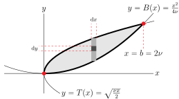 - The mass of the rectangle centred on \((x,y)\) is essentially \(f(x,y)\,\dee{x}\,\dee{y}=xy\,\dee{x}\,\dee{y}\text{.}\)
- So the mass of the strip centred on \(x\) is essentially \(\ \dee{x}\, \int_{B(x)}^{T(x)}\dee{y}\ f(x,y) \) (the integral over \(y\) adds up the masses of all of the different rectangles on the single vertical strip in question) and
-
we conclude that the
\begin{align*} \text{Mass}(\cR) &=\int_a^b \dee{x}\int_{B(x)}^{T(x)} \dee{y}\ f(x,y) =\int_0^{2\nu} \dee{x}\int_{x^2/(4\nu)}^{\sqrt{\nu x/2}} \dee{y}\ xy \end{align*}Here the integral over \(x\) adds up the masses of all of the different strips.
Recall that, when integrating \(y\text{,}\) \(x\) is held constant, so we may factor the constant \(x\) out of the inner \(y\) integral.
\begin{align*} \int_{x^2/(4\nu)}^{\sqrt{\nu x/2}} \dee{y}\ xy &= x\int_{x^2/(4\nu)}^{\sqrt{\nu x/2}} \dee{y}\ y\\ &= x\left[\frac{y^2}{2}\right]_{x^2/(4\nu)}^{\sqrt{\nu x/2}}\\ &=\frac{\nu x^2}{4}-\frac{x^5}{32\nu^2} \end{align*}and the
\begin{align*} \text{Mass}(\cR) &=\int_0^{2\nu} \dee{x}\ \left[\frac{\nu x^2}{4}-\frac{x^5}{32\nu^2}\right]\\ &= \frac{\nu (2\nu)^3}{3\times 4}-\frac{(2\nu)^6}{6\times 32\nu^2} =\frac{\nu^4}{3} \end{align*}
Solution using horizontal strips.\(\ \ \ \) We'll now set up a double integral for the mass using horizontal strips, again using the abbreviated argument of the end of the last section (on volumes). Note, from the figure at the beginning of this example, that
- Slice \(\cR\) into long “infinitesimally” thin horizontal strips of width \(\dee{y}\text{.}\)
-
Subdivide each strip into “infinitesimal” rectangles each of height \(\dee{y}\) and of width \(\dee{x}\text{.}\) See the figure below.
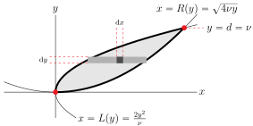 - The mass of the rectangle centred on \((x,y)\) is essentially \(f(x,y)\,\dee{x}\,\dee{y}=xy\,\dee{x}\,\dee{y}\text{.}\)
- So the mass of the strip centred on \(y\) is essentially \(\ \dee{y}\, \int_{L(y)}^{R(y)}\dee{x}\ f(x,y) \) (the integral over \(x\) adds up the masses of all of the different rectangles on the single horizontal strip in question) and
- we conclude that the\begin{align*} \text{Mass}(\cR) &=\int_c^d \dee{y}\int_{L(y)}^{R(y)} \dee{x}\ f(x,y) =\int_0^{\nu} \dee{y}\int_{2y^2/\nu}^{\sqrt{4\nu y}} \dee{x}\ xy \end{align*}Here the integral over \(y\) adds up the masses of all of the different strips. Recalling that, when integrating \(x\text{,}\) \(y\) is held constant\begin{align*} \text{Mass}(\cR) &=\int_0^{\nu} \dee{y}\ y\left[ \int_{2y^2/\nu}^{\sqrt{4\nu y}} \dee{x}\ x\right]\\ &=\int_0^{\nu} \dee{y}\ y\left[\frac{x^2}{2}\right] _{2y^2/\nu}^{\sqrt{4\nu y}}\\ &=\int_0^{\nu} \dee{y}\ \left[2\nu y^2-\frac{2y^5}{\nu^2}\right]\\ &= \frac{2\nu (\nu)^3}{3}-\frac{2\nu^6}{6\nu^2} =\frac{\nu^4}{3} \end{align*}
Example 3.1.12. Volume.
Let \(\cR\) be the part of the \(xy\)-plane above the \(x\)-axis and below the parabola \(y=1-x^2\text{.}\) Find the volume between \(\cR\) and the surface \(z=x^2\sqrt{1-y}\text{.}\)
Yet again, for practice, we'll do this problem twice — once using vertical strips and once using horizontal strips. First, here is a sketch of \(\cR\text{.}\)
Solution using vertical strips.\(\ \ \ \) We'll now set up a double integral for the volume using vertical strips. Note, from the figure
that
- the leftmost point in \(\cR\) has \(x=-1\) and the rightmost point in \(\cR\) has \(x=1\) and
- for each fixed \(x\) between \(-1\) and \(1\text{,}\) the point \((x,y)\) in \(\cR\) with the smallest \(y\) has \(y=0\) and the point \((x,y)\) in \(\cR\) with the largest \(y\) has \(y=1-x^2\text{.}\)
Thus
and, by 3.1.10
since the inside integral \(F(x) = \int_0^{1-x^2} \dee{y}\ x^2\sqrt{1-y}\) is an even function of \(x\text{.}\) Now, for \(x\ge 0\text{,}\) the inside integral is
so that the
Solution using horizontal strips.\(\ \ \ \) This time we'll set up a double integral for the volume using horizontal strips. Note, from the figure
that
- the lowest points in \(\cR\) have \(y=0\) and the topmost point in \(\cR\) has \(y=1\) and
- for each fixed \(y\) between \(0\) and \(1\text{,}\) the point \((x,y)\) in \(\cR\) with the leftmost \(x\) has \(x=-\sqrt{1-y}\) and the point \((x,y)\) in \(\cR\) with the rightmost \(x\) has \(x=\sqrt{1-y}\text{.}\)
Thus
and, by 3.1.9
Now the inside integral has an even integrand (in \(x\)) and so is
So the
Example 3.1.13. Volume.
Find the volume common to the two cylinders \(x^2+y^2=a^2\) and \(x^2+z^2=a^2\text{.}\)
Our first job is figure out what the specified solid looks like. Note that
- The variable \(z\) does not appear in the equation \(x^2+y^2=a^2\text{.}\) So, for every value of the constant \(z_0\text{,}\) the part of the cylinder \(x^2+y^2=a^2\) in the plane \(z=z_0\text{,}\) is the circle \(x^2+y^2=a^2\text{,}\) \(z=z_0\text{.}\) So the cylinder \(x^2+y^2=a^2\) consists of many circles stacked vertically, one on top of the other. The part of the cylinder \(x^2+y^2=a^2\) that lies above the \(xy\)-plane is sketched in the figure on the left below.
-
The variable \(y\) does not appear in the equation \(x^2+z^2=a^2\text{.}\) So, for every value of the constant \(y_0\text{,}\) the part of the cylinder \(x^2+z^2=a^2\) in the plane \(y=y_0\text{,}\) is the circle \(x^2+z^2=a^2\text{,}\) \(y=y_0\text{.}\) So the cylinder \(x^2+z^2=a^2\) consists of many circles stacked horizontally, one beside the other. The part of the cylinder \(x^2+z^2=a^2\) that lies to the right of the \(xz\)-plane is sketched in the figure on the right below.
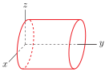
We have to compute the volume common to these two intersecting cylinders.
- The equations \(x^2+y^2=a^2\) and \(x^2+z^2=a^2\) do not change at all if \(x\) is replaced by \(-x\text{.}\) Consequently both cylinders, and hence our solid, is symmetric about the \(yz\)-plane. In particular the volume of the part of the solid in the octant \(x\le 0\text{,}\) \(y\ge 0\text{,}\) \(z\ge 0\) is the same as the volume in the first octant \(x\ge 0\text{,}\) \(y\ge 0\text{,}\) \(z\ge 0\text{.}\) Similarly, the equations do not change at all if \(y\) is replaced by \(-y\) or if \(z\) is replaced by \(-z\text{.}\) Our solid is also symmetric about both the \(xz\)-plane and the \(xy\)-plane. Hence the volume of the part of our solid in each of the eight octants is the same.
- So we will compute the volume of the part of the solid in the first octant, i.e. with \(x\ge 0\text{,}\) \(y\ge 0\text{,}\) \(z\ge 0\text{.}\) The total volume of the solid is eight times that.
The part of the solid in the first octant is sketched in the figure on the left below. A point \((x,y,z)\) lies in the first cylinder if and only if \(x^2+y^2\le a^2\text{.}\)
It lies in the second cylinder if and only if \(x^2+z^2\le a^2\text{.}\) So the part of the solid in the first octant is
Notice that, in \(\cV_1\text{,}\) \(z^2\le a^2-x^2\) so that \(z\le\sqrt{a^2-x^2}\) and
The top view of the part of the solid in the first octant is sketched in the figure on the right above. In that top view, \(x\) runs from \(0\) to \(a\text{.}\) For each fixed \(x\text{,}\) \(y\) runs from \(0\) to \(\sqrt{a^2-x^2}\text{.}\) So we may rewrite
where
and “\((x,y)\in\cR\)” is read “\((x,y)\) is an element of \(\cR\text{.}\)”. Note that \(f(x,y)\) is actually independent of \(y\text{.}\) This will make things a bit easier below.
We can now compute the volume of \(\cV_1\) using our usual abbreviated protocol.
- Slice \(\cR\) into long “infinitesimally” thin horizontal strips of height \(\dee{x}\text{.}\)
-
Subdivide each strip into “infinitesimal” rectangles each of width \(\dee{y}\) and of height \(\dee{x}\text{.}\) See the figure below.
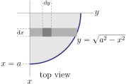 - The volume of the part of \(\cV_1\) above rectangle centred on \((x,y)\) is essentially\begin{equation*} f(x,y)\,\dee{x}\,\dee{y}=\sqrt{a^2-x^2}\ \dee{x}\,\dee{y} \end{equation*}
- So the volume of the part of \(\cV_1\) above the strip centred on \(x\) is essentially\begin{equation*} \dee{x}\, \int_0^{\sqrt{a^2-x^2}} \sqrt{a^2-x^2}\ \dee{y} \end{equation*}(the integral over \(y\) adds up the volumes over all of the different rectangles on the single horizontal strip in question) and
- we conclude that the\begin{align*} \text{Volume}(\cV_1) &=\int_0^a \dee{x}\, \int_0^{\sqrt{a^2-x^2}}\dee{y}\ \sqrt{a^2-x^2} \end{align*}Here the integral over \(x\) adds up the volumes over all of the different strips. Recalling that, when integrating \(y\text{,}\) \(x\) is held constant\begin{align*} \text{Volume}(\cV_1) &=\int_0^a \dee{x}\ \sqrt{a^2-x^2}\left[ \int_0^{\sqrt{a^2-x^2}} \dee{y} \right]\\ &=\int_0^a \dee{x}\ \big(a^2-x^2\big)\\ &=\left[a^2x-\frac{x^3}{3}\right]_0^a\\ &=\frac{2a^3}{3} \end{align*}and the total volume of the solid in question is\begin{equation*} \text{Volume}(\cV) =8\,\text{Volume}(\cV_1) =\frac{16a^3}{3} \end{equation*}
Example 3.1.14. Geometric Interpretation.
Evaluate \(\displaystyle\int_0^2\int_0^a \sqrt{a^2-x^2}\ \dee{x}\,\dee{y}\text{.}\)
This integral represents the volume of a simple geometric figure and so can be evaluated without using any calculus at all. The domain of integration is
and the integrand is \(f(x,y) = \sqrt{a^2-x^2}\text{,}\) so the integral represents the volume between the \(xy\)-plane and the surface \(z=\sqrt{a^2-x^2}\text{,}\) with \((x,y)\) running over \(\cR\text{.}\) We can rewrite the equation of the surface as \(x^2+z^2=a^2\text{,}\) which, as in Example 3.1.13, we recognize as the equation of a cylinder of radius \(a\) centred on the \(y\)-axis. We want the volume of the part of this cylinder that lies above \(\cR\text{.}\) It is sketched in the figure below.
The constant \(y\) cross-sections of this volume are quarter circles of radius \(a\) and hence of area \(\frac{1}{4}\pi a^2\text{.}\) The inside integral, \(\int_0^a \sqrt{a^2-x^2}\ \dee{x}\text{,}\) is exactly this area. So, as \(y\) runs from \(0\) to \(2\text{,}\)
Example 3.1.15. Example 3.1.14, the hard way.
It is possible, but very tedious, to evaluate the integral \(\int_0^2\int_0^a \sqrt{a^2-x^2}\ \dee{x}\,\dee{y}\) of Example 3.1.14, using single variable calculus techniques. We do so now as a review of a couple of those techniques.
The inside integral is \(\int_0^a \sqrt{a^2-x^2}\ \dee{x}\text{.}\) The standard procedure for eliminating square roots like \(\sqrt{a^2-x^2}\) from integrands is the method of trigonometric substitution, that was covered in §1.9 of the CLP-2 text. In this case, the appropriate substitution is
The lower limit of integration \(x=0\text{,}\) i.e. \(a\sin\theta=0\text{,}\) corresponds to \(\theta=0\text{,}\) and the upper limit \(x=a\text{,}\) i.e. \(a\sin\theta=a\text{,}\) corresponds to \(\theta=\frac{\pi}{2}\text{,}\) so that
The orthodox procedure for evaluating the resulting trigonometric integral \(\int_0^{\pi/2} \cos^2\theta\ \dee{\theta}\text{,}\) covered in §1.8 of the CLP-2 text, uses the trigonometric double angle formula
and then
However we remark that there is also an efficient, sneaky, way to evaluate definite integrals like \(\int_0^{\pi/2} \cos^2\theta\ \dee{\theta}\text{.}\) Looking at the figures
we see that
Thus
In any event, the inside integral
and the full integral
just as we saw in Example 3.1.14.
Example 3.1.16. Order of Integration.
The integral \(\displaystyle\int_{-1}^2\int_{x^2}^{x+2}\dee{y}\,\dee{x}\) represents the area of a region in the \(xy\)-plane. Express the same area as a double integral with the order of integration reversed.
\soln The critical step in reversing the order of integration is to sketch the region in the \(xy\)-plane. Rewrite the given integral as
From this we see that, on the domain of integration,
- \(x\) runs from \(-1\) to \(2\) and
- for each fixed \(x\text{,}\) \(y\) runs from the parabola \(y=x^2\) to the straight line \(y=x+2\text{.}\)
The given iterated integral corresponds to the (vertical) slicing in the figure on the left below.
To reverse the order of integration we have to switch to horizontal slices as in the figure on the right above.
There we see a new wrinkle: the formula giving the value of \(x\) at the left hand end of a slice depends on whether the \(y\) coordinate of the slice is bigger than, or smaller than \(y=1\text{.}\) Looking at the figure on the right, we see that, on the domain of integration,
- \(y\) runs from \(0\) to \(4\) and
- for each fixed \(0\le y\le 1\text{,}\) \(x\) runs from \(x=-\sqrt{y}\) to \(x=+\sqrt{y}\text{.}\)
- for each fixed \(1\le y\le 4\text{,}\) \(x\) runs from \(x=y-2\) to \(x=+\sqrt{y}\text{.}\)
So
There was a moral to the last example. Just because both orders of integration have to give the same answer doesn't mean that they are equally easy to evaluate. Here is an extreme example illustrating that moral.
Example 3.1.17.
Evaluate the integral of \(\frac{\sin x}{x}\) over the region in the \(xy\)-plane that is above the \(x\)-axis, to the right of the line \(y=x\) and to the left of the line \(x=1\text{.}\)
Here is a sketch of the specified domain.
We'll try to evaluate the specified integral twice — once using horizontal strips (the impossibly hard way) and once using vertical strips (the easy way).
Solution using horizontal strips.\(\ \ \ \) To set up the integral using horizontal strips, as in the figure on the left below, we observe that, on the domain of integration,
- \(y\) runs from \(0\) to \(1\) and
- for each fixed \(y\text{,}\) \(x\) runs from \(x=y\) to \(1\text{.}\)
So the iterated integral is
And we have a problem. The integrand \(\frac{\sin x}{x}\) does not have an antiderivative that can be expressed in terms of elementary functions 5 . It is impossible to evaluate \(\int_y^1\dee{x}\ \frac{\sin x}{x}\) without resorting to, for example, numerical methods or infinite series 6 .
Solution using vertical strips.\(\ \ \ \) To set up the integral using vertical strips, as in the figure on the right above, we observe that, on the domain of integration,
- \(x\) runs from \(0\) to \(1\) and
- for each fixed \(x\text{,}\) \(y\) runs from \(0\) to \(y=x\text{.}\)
So the iterated integral is
This time, because \(x\) is treated as a constant in the inner integral, it is trivial to evaluate the iterated integral.
Here is an example which is included as an excuse to review some integration technique from CLP-2.
Example 3.1.18.
Find the volume under the surface \(z=1-3x^2-2y^2\) and above the \(xy\)-plane.
Before leaping into integration, we should try to understand what the surface and volume look like. For each constant \(z_0\text{,}\) the part of the surface \(z=1-3x^2-2y^2\) that lies in the horizontal plane \(z=z_0\) is the ellipse \(3x^2+2y^2=1-z_0\text{.}\) The biggest of these ellipses is that in the \(xy\)-plane, where \(z_0=0\text{.}\) It is the ellipse \(3x^2+2y^2=1\text{.}\) As \(z_0\) increases the ellipse shrinks, degenerating to a single point, namely \((0,0,1)\text{,}\) when \(z_0=1\text{.}\) So the surface consists of a stack of ellipses and our solid is
This is sketched in the figure below
The top view of the base region
is sketched in the figure below.
Considering that the \(x\)-dependence in \(z=1-3x^2-2y^2\) is almost identical to the \(y\)-dependence in \(z=1-3x^2-2y^2\) (only the coefficients \(2\) and \(3\) are interchanged), using vertical slices is likely to lead to exactly the same level of difficulty as using horizontal slices. So we'll just pick one — say vertical slices.
The fattest part of \(\cR\) is on the \(y\)-axis. The intersection points of the ellipse with the \(y\)-axis have \(x=0\) and \(y\) obeying \(3(0)^2+2y^2 =1 \) or \(y=\pm\frac{1}{\sqrt{2}}\text{.}\) So in \(\cR\text{,}\) \(-\frac{1}{\sqrt{2}}\le y\le \frac{1}{\sqrt{2}}\) and, for each such \(y\text{,}\) \(3x^2\le 1-2y^2\) or \(-\sqrt{\frac{1-2y^2}{3}}\le x\le \sqrt{\frac{1-2y^2}{3}}\text{.}\) So using vertical strips as in the figure above
To evaluate this integral, we use the trig substitution 7 \(2y^2=\sin^2\theta\text{,}\) or
to give
Then to integrate \(\cos^4\theta\text{,}\) we use the double angle formula 8
Finally, since \(\int_0^{\frac{\pi}{2}} \cos(4\theta)\,\dee{\theta} =\int_0^{\frac{\pi}{2}} \cos(2\theta)\,\dee{\theta} =0\text{,}\)
Subsection 3.1.5 Optional — More about the Definition of \(\ \dblInt_\cR f(x,y)\ \dee{x}\dee{y}\)
Technically, the integral \(\dblInt_\cR f(x,y)\ \dee{x}\,\dee{y}\text{,}\) where \(\cR\) is a bounded region in \(\bbbr^2\text{,}\) is defined as follows.
-
Subdivide \(\cR\) by drawing lines parallel to the \(x\) and \(y\) axes.
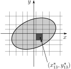 - Number the resulting rectangles contained in \(\cR\text{,}\) \(1\) through \(n\text{.}\) Notice that we are numbering all of the rectangles in \(\cR\text{,}\) not just those in one particular row or column.
- Denote by \(\De A_i\) the area of rectangle \(\# i\text{.}\)
- Select an arbitrary point \((x_i^*,y_i^*)\) in rectangle \(\# i\text{.}\)
- Form the sum \(\sum\limits_{i=1}^n f(x_i^*,y_i^*) \De A_i \text{.}\) Again note that the sum runs over all of the rectangles in \(\cR\text{,}\) not just those in one particular row or column.
Now repeat this construction over and over again, using finer and finer grids. If, as the size 9 of the rectangles approaches zero, this sum approaches a unique limit (independent of the choice of parallel lines and of points \((x_i^*,y_i^*)\)), then we define
Theorem 3.1.19.
If \(f(x,y)\) is continuous in a region \(\cR\) described by
for continuous functions \(B(x)\text{,}\) \(T(x)\text{,}\) then
both exist and are equal. Similarly, if \(\cR\) is described by
for continuous functions \(L(y)\text{,}\) \(R(y)\text{,}\) then
both exist and are equal.
The proof of this theorem is not particularly difficult, but is still beyond the scope of this text. The main ideas in the proof can already be seen in §1.1.6 of the CLP-2 text. An important consequence of this theorem is
Theorem 3.1.20. Fubini.
If \(f(x,y)\) is continuous in a region \(\cR\) described by both
for continuous functions \(B(x)\text{,}\) \(T(x)\text{,}\) \(L(y)\text{,}\) \(R(y)\text{,}\) then both
exist and are equal.
The hypotheses of both of these theorems can be relaxed a bit, but not too much. For example, if
then the integral \(\dblInt_\cR f(x,y)\ \dee{x}\,\dee{y}\) does not exist. This is easy to see. If all of the \(x_i^*\)'s and \(y_i^*\)'s are chosen to be rational numbers, then
But if we choose all the \(x_i^*\)'s and \(y_i^*\)'s to be irrational numbers, then
So the limit of \(\sum\limits_{i=1}^n f(x_i^*,y_i^*)\,\De A_i\text{,}\) as the maximum diagonal of the rectangles approaches zero, depends on the choice of points \((x_i^*,y_i^*)\text{.}\) So the integral \(\dblInt_\cR f(x,y)\ \dee{x}\,\dee{y}\) does not exist.
Here is an even more pathological 10 example.
Example 3.1.21.
In this example, we relax exactly one of the hypotheses of Fubini's Theorem, namely the continuity of \(f\text{,}\) and construct an example in which both of the integrals in Fubini's Theorem exist, but are not equal. In fact, we choose \(\cR=\Set{(x,y)}{0\le x\le 1,\ 0\le y\le 1}\) and we use a function \(f(x,y)\) that is continuous on \(\cR\text{,}\) except at exactly one point — the origin.
First, let \(\de_1,\de_2,\de_3,\ \cdots\) be any sequence of real numbers obeying
For example \(\de_n=\frac{1}{n}\) or \(\de_n=\frac{1}{2^{n-1}}\) are both acceptable. For each positive integer \(n\text{,}\) let \(I_n=(\de_{n+1},\de_n]=\Set{t}{\de_{n+1} \lt t\le \de_n}\) and let \(g_n(t)\) be any nonnegative continuous function obeying
- \(g_n(t)=0\) if \(t\) is not in \(I_n\) and
- \(\displaystyle \int_{I_n}g(t)\,dt=1\)
There are many such functions. For example
Here is a summary of what we have done so far.
- We subdivided the interval \(0 \lt x\le 1\) into infinitely many subintervals \(I_n\text{.}\) As \(n\) increases, the subinterval \(I_n\) gets smaller and smaller and also gets closer and closer to zero.
- We defined, for each \(n\text{,}\) a nonnegative continuous function \(g_n\) that is zero everywhere outside of \(I_n\) and whose integral over \(I_n\) is one.
Now we define the integrand \(f(x,y)\) in terms of these subintervals \(I_n\) and functions \(g_n\text{.}\)
You should think of \((0,1]\times(0,1]\) as a union of a bunch of small rectangles \(I_m\times I_n\text{,}\) as in the figure below. On most of these rectangles, \(f(x,y)\) is just zero. The exceptions are the darkly shaded rectangles \(I_n\times I_n\) on the “diagonal” of the figure and the lightly shaded rectangles \(I_{n+1}\times I_n\) just to the left of the “diagonal”.
On each darkly shaded rectangle, \(f(x,y)\ge 0\) and the graph of \(f(x,y)\) is the graph of \(g_n(x)g_n(y)\) which looks like a pyramid. On each lightly shaded rectangle, \(f(x,y)\le 0\) and the graph of \(f(x,y)\) is the graph of \(-g_{n+1}(x)g_n(y)\) which looks like a pyramidal hole in the ground.
Now fix any \(0\le y\le 1\) and let's compute \(\int_0^1 f(x,y)\ \dee{x}\text{.}\) That is, we are integrating \(f\) along a line that is parallel to the \(x\)-axis. If \(y=0\text{,}\) then \(f(x,y)=0\) for all \(x\text{,}\) so \(\int_0^1 f(x,y)\,\dee{x} = 0\text{.}\) If \(0 \lt y\le 1\text{,}\) then there is exactly one positive integer \(n\) with \(y\in I_n\) and \(f(x,y)\) is zero, except for \(x\) in \(I_n\) or \(I_{n+1}\text{.}\) So for \(y\in I_n\)
Here we have twice used that \(\int_{I_m}g(t)\,dt=1\) for all \(m\text{.}\) Thus \(\int_0^1 f(x,y)\,\dee{x}=0\) for all \(y\) and hence \(\int_0^1\dee{y}\Big[\int_0^1 \dee{x}\ f(x,y)\Big]=0\text{.}\)
Finally, fix any \(0\le x\le 1\) and let's compute \(\int_0^1 f(x,y)\ \dee{y}\text{.}\) That is, we are integrating \(f\) along a line that is parallel to the \(y\)-axis. If \(x=0\text{,}\) then \(f(x,y)=0\) for all \(y\text{,}\) so \(\int_0^1 f(x,y)\,\dee{y} = 0\text{.}\) If \(0 \lt x\le 1\text{,}\) then there is exactly one positive integer \(m\) with \(x\in I_m\text{.}\) If \(m\ge 2\text{,}\) then \(f(x,y)\) is zero, except for \(y\) in \(I_m\) and \(I_{m-1}\text{.}\) But, if \(m=1\text{,}\) then \(f(x,y)\) is zero, except for \(y\) in \(I_1\text{.}\) (Take another look at the figure above.) So for \(x\in I_m\text{,}\) with \(m\ge 2\text{,}\)
But for \(x\in I_1\text{,}\)
Thus
and hence
The conclusion is that for the \(f(x,y)\) above, which is defined for all \(0\le x\le 1\text{,}\) \(0\le y\le 1\) and is continuous except at \((0,0)\text{,}\)
Subsection 3.1.6 Even and Odd Functions
During the course of our study of integrals of functions of one variable, we found that the evaluation of certain integrals could be substantially simplified by exploiting symmetry properties of the integrand. Concretely, in Section 1.2.1 of the CLP-2 text, we gave the
Definition 3.1.22. (Definition 1.2.8 in the CLP-2 text).
Let \(f(x)\) be a function of one variable. Then,
- we say that \(f(x)\) is even when \(f(x)=f(-x)\) for all \(x\text{,}\) and
- we say that \(f(x)\) is odd when \(f(x)=-f(-x)\) for all \(x\text{.}\)
We also saw that
- \(f(x)=|x|\text{,}\) \(f(x)=\cos x\) and \(f(x)=x^2\) are even functions and
- \(f(x)=\sin x\text{,}\) \(f(x)=\tan x\) and \(f(x)=x^3\) are odd functions.
- In fact, if \(f(x)\) is any even power of \(x\text{,}\) then \(f(x)\) is an even function and if \(f(x)\) is any odd power of \(x\text{,}\) then \(f(x)\) is an odd function.
We also learned how to exploit evenness and oddness to simplify integration.
Theorem 3.1.23. (Theorem 1.2.11 in the CLP-2 text).
Let \(a>0\text{.}\)
- If \(f(x)\) is an even function, then\begin{equation*} \int_{-a}^a f(x) \dee{x} = 2\int_0^a f(x) \dee{x} \end{equation*}
- If \(f(x)\) is an odd function, then\begin{equation*} \int_{-a}^a f(x) \dee{x} = 0 \end{equation*}
We will now see that we can similarly exploit evenness and oddness of functions of more than one variable. But for functions of more than one variable there is also more than one kind of oddness and evenness. In the Definition 3.1.22 (Definition 1.2.8 in the CLP-2 text) of evenness and oddness of the function \(f(x)\text{,}\) we compared the value of \(f\) at \(x\) with the value of \(f\) at \(-x\text{.}\) The points \(x\) and \(-x\) are the same distance from the origin, \(0\text{,}\) and are on opposite sides of \(0\text{.}\) The point \(-x\) is called the reflection of \(x\) across the origin. To prepare for our definitions of evenness and oddness of functions of two variables, we now define three different reflections in the two dimensional world of the \(xy\)-plane.
Definition 3.1.24.
Let \(x\) and \(y\) be two real numbers.
- The reflection of \((x,y)\) across the \(y\)-axis is \((-x,y)\text{.}\)
- The reflection of \((x,y)\) across the \(x\)-axis is \((x,-y)\text{.}\)
- The reflection of \((x,y)\) across the origin is \((-x,-y)\text{.}\)
-
To get from the point \((x,y)\) to its image reflected across the \(y\)-axis, you
- start from \((x,y)\text{,}\) and
- walk horizontally straight to the \(y\)-axis, and
- cross the \(y\)-axis, and
- continue horizontally the same distance as you have already travelled to \((-x,y)\text{.}\)
Here are four examples.
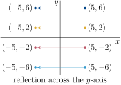 -
To get from the point \((x,y)\) to its image reflected across the \(x\)-axis, you
- start from \((x,y)\text{,}\) and
- walk vertically straight to the \(x\)-axis, and
- cross the \(x\)-axis, and
- continue vertically the same distance as you have already travelled to the reflected image \((x,-y)\text{.}\)
Here are four examples.
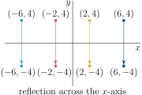 -
To get from the point \((x,y)\) to its image reflected across the origin, you
- start from \((x,y)\text{,}\) and
- walk radially straight to the origin, and
- cross the origin, and
- continue radially in the same direction the same distance as you have already travelled to the reflected image \((-x,-y)\text{.}\)
Here are three examples.
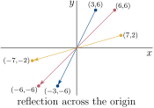
For each of these three types of reflection, there is a corresponding kind of oddness and evenness.
Definition 3.1.25.
Let \(f(x,y)\) be a function of two variables. Then,
- we say that \(f(x,y)\) is even (under reflection across the origin) when \(f(-x,-y)=f(x,y)\) for all \(x\) and \(y\text{,}\) and
- we say that \(f(x,y)\) is odd (under reflection across the origin) when \(f(-x,-y)=-f(x,y)\) for all \(x\) and \(y\)
and
- we say that \(f(x,y)\) is even under \(x\rightarrow -x\) (i.e. under reflection across the \(y\)-axis) when \(f(-x,y)=f(x,y)\) for all \(x\) and \(y\text{,}\) and
- we say that \(f(x,y)\) is odd under \(x\rightarrow -x\) (i.e. under reflection across the \(y\)-axis) when \(f(-x,y)=-f(x,y)\) for all \(x\) and \(y\)
and
- we say that \(f(x,y)\) is even under \(y\rightarrow -y\) (i.e. under reflection across the \(x\)-axis) when \(f(x,-y)=f(x,y)\) for all \(x\) and \(y\text{,}\) and
- we say that \(f(x,y)\) is odd under \(y\rightarrow -y\) (i.e. under reflection across the \(x\)-axis) when \(f(x,-y)=-f(x,y)\) for all \(x\) and \(y\text{.}\)
Example 3.1.26.
Let \(m\) and \(n\) be two integers and set \(f(x,y)=x^m y^n\text{.}\) Then
Consequently
- if \(m\) is even, then \(f(x,y)\) is even under \(x\rightarrow -x\) and
- if \(m\) is odd, then \(f(x,y)\) is odd under \(x\rightarrow -x\) and
- if \(n\) is even, then \(f(x,y)\) is even under \(y\rightarrow -y\) and
- if \(n\) is odd, then \(f(x,y)\) is odd under \(y\rightarrow -y\) and
- if \(m+n\) is even, then \(f(x,y)\) is even (under reflection across the origin) and
- if \(m+n\) is odd, then \(f(x,y)\) is odd (under reflection across the origin).
Recall from Theorem 3.1.23 (or Theorem 1.2.11 in the CLP-2 text) that we can exploit the evenness or oddness of the integrand, \(f(x)\text{,}\) of the integral \(\int_b^a f(x)\,\dee{x}\) to simplify the evaluation of the integral when \(b=-a\text{,}\) i.e. when the domain of integration is invariant under reflection across the origin. Similarly, we will be able to simplify the evaluation of the double integral \(\dblInt_\cR f\big(x,y\big)\,\dee{x}\,\dee{y}\) when the integrand is even or odd and the domain of integration \(\cR\) is invariant under the corresponding reflection — meaning that the reflected \(\cR\) is identical to the original \(\cR\text{.}\) Here are some details for “reflection across the \(y\)-axis”. The details for the other reflections are similar.
- If \(\cR\) is any subset of the \(xy\)-plane,\begin{equation*} \text{the reflection of }\cR\text{ across the }y\text{-axis} =\Set{(-x,y)}{(x,y)\in\cR} \end{equation*}The set notation on the right hand side means “the set of all points \((-x,y)\) with \((x,y)\) a point of \(\cR\)”.
-
In the special case 11 that
\begin{equation*} \cR=\Set{(x,y)}{c\le y\le d, L(y)\le x\le R(y)} \end{equation*}(see §3.1.2 on horizontal slices) then
\begin{equation*} \text{the reflection of }\cR\text{ across the }y\text{-axis} =\Set{(x,y)}{c\le y\le d, -R(y)\le x\le -L(y)} \end{equation*}In the sketch below \(\cR_y\) is the reflection of \(\cR\) across the \(y\)-axis.
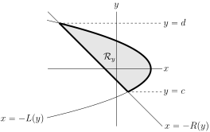 - A subset \(\cR\) of the \(xy\)-plane is invariant under reflection across the \(y\)-axis (or is also known as “symmetric about the \(y\)-axis”) when\begin{equation*} (-x,y)\text{ is in }\cR \iff (x,y)\text{ is in }\cR \end{equation*}Recall that the symbol \(\iff\) is read “if and only if”. In the special case that\begin{equation*} \cR=\Set{(x,y)}{c\le y\le d, L(y)\le x\le R(y)} \end{equation*}\(\cR\) is is invariant under reflection across the \(y\)-axis when \(L(y)=-R(y)\text{.}\)
Here are some more sketches. The first sketch is of a rectangle that is invariant under reflection across the \(y\)-axis, but is not invariant under reflection across the \(x\)-axis. The remaining three sketches show a triangle and its reflections across the \(y\)-axis, across the \(x\)-axis and across the origin.
We are finally ready for the analog of Theorem 3.1.23 (Theorem 1.2.11 in the CLP-2 text) for functions of two variables. By way of motivation for that theorem, consider the integral \(\dblInt_{\cR} f(x,y)\,\dee{x}\dee{y}\text{,}\) with the integrand, \(f(x,y)\text{,}\) odd under \(x\rightarrow -x\text{,}\) and the domain of integration, \(\cR\text{,}\) symmetric about the \(y\)-axis. Slice up \(\cR\) into tiny (think “infinitesmal”) squares, either by subdividing vertical slices into tiny squares, as in §3.1.1, or by subdividing horizontal slices into tiny squares, as in §3.1.2. Concentrate on any point \((x_0,y_0)\) in \(\cR\text{.}\)
The contribution to the integral coming from the square that contains \((x_0,y_0)\) is (essentially 12 ) \(f(x_0,y_0)\,\De x\,\De y\text{.}\) That contribution is cancelled by the contribution coming from the square containing (the reflected point) \((-x_0,y_0)\text{,}\) which is
This is the case for all points \((x_0,y_0)\) in \(\cR\text{.}\) Consequently
Here is the analog of Theorem 3.1.23 for functions of two variables.
Theorem 3.1.27. 2d Even and Odd.
- Let \(\cR\) be a subset of the \(xy\)-plane that is symmetric about the \(y\)-axis. If \(f(x,y)\) is odd under \(x\rightarrow -x\text{,}\) then\begin{equation*} \dblInt_{\cR} f(x,y)\,\dee{x}\dee{y} = 0 \end{equation*}Denote by \(\cR_+\) the set of all points in \(\cR\) that have \(x\ge 0\text{.}\) If \(f(x,y)\) is even under \(x\rightarrow -x\text{,}\) then\begin{equation*} \dblInt_{\cR} f(x,y)\,\dee{x}\dee{y} = 2\dblInt_{\cR_+} f(x,y)\,\dee{x}\dee{y} \end{equation*}
- Let \(\cR\) be a subset of the \(xy\)-plane that is symmetric about the \(x\)-axis. If \(f(x,y)\) is odd under \(y\rightarrow -y\text{,}\) then\begin{equation*} \dblInt_{\cR} f(x,y)\,\dee{x}\dee{y} = 0 \end{equation*}Denote by \(\cR_+\) the set of all points in \(\cR\) that have \(y\ge 0\text{.}\) If \(f(x,y)\) is even under \(y\rightarrow -y\text{,}\) then\begin{equation*} \dblInt_{\cR} f(x,y)\,\dee{x}\dee{y} = 2\dblInt_{\cR_+} f(x,y)\,\dee{x}\dee{y} \end{equation*}
- Let \(\cR\) be a subset of the \(xy\)-plane that is invariant under reflection across the origin. If \(f(x,y)\) is odd (under reflection across the origin), then\begin{equation*} \dblInt_{\cR} f(x,y)\,\dee{x}\dee{y} = 0 \end{equation*}Denote by \(\cR_+\) either the set of all points in \(\cR\) that have \(x\ge 0\) or the set of all points in \(\cR\) that have \(y\ge 0\text{.}\) If \(f(x,y)\) is even (under reflection across the origin), then\begin{equation*} \dblInt_{\cR} f(x,y)\,\dee{x}\dee{y} = 2\dblInt_{\cR_+} f(x,y)\,\dee{x}\dee{y} \end{equation*}
Proof.
We will give only the proof for part (a) in the special case that
In part (a), we are assuming that \(\cR\) is symmetric about the \(y\)-axis, so that \(L(y)=-R(y)\text{.}\) So, using horizontal strips, as described in §3.1.2,
Fix any \(c\le y\le d\text{.}\)
- If \(f(x,y)\) is odd under \(x\rightarrow -x\text{,}\) then \(f(-x,y)=-f(x,y)\) for all \(-R(y)\le x\le R(y)\) and\begin{equation*} \int_{-R(y)}^{R(y)} \dee{x}\ f(x,y)=0 \end{equation*}by part (b) of Theorem 3.1.23 (Theorem 1.2.11 in the CLP-2 text).
- If \(f(x,y)\) is even under \(x\rightarrow -x\text{,}\) then \(f(-x,y)=f(x,y)\) for all \(-R(y)\le x\le R(y)\) and\begin{equation*} \int_{-R(y)}^{R(y)} \dee{x}\ f(x,y)=2\int_0^{R(y)} \dee{x}\ f(x,y) \end{equation*}by part (a) of Theorem 3.1.23.
As the statements of the two bullets are true for each fixed \(c\le y\le d\text{,}\) we have that
- if \(f(x,y)\) is odd under \(x\rightarrow -x\text{,}\) then\begin{align*} \dblInt_{\cR} f(x,y)\,\dee{x}\dee{y} &=\int_c^d \dee{y} \int_{-R(y)}^{R(y)} \dee{x}\ f(x,y) =\int_c^d \dee{y}\ 0 \\ &=0 \end{align*}
- and if \(f(x,y)\) is even under \(x\rightarrow -x\text{,}\) then\begin{align*} \dblInt_{\cR} f(x,y)\,\dee{x}\dee{y} &=\int_c^d \dee{y} \int_{-R(y)}^{R(y)} \dee{x}\ f(x,y) =\int_c^d \dee{y}\ 2\int_0^{R(y)} \dee{x}\ f(x,y) \\ &=2\dblInt_{\cR_+} f(x,y)\,\dee{x}\dee{y} \end{align*}
The proof of part (a) when \(\cR\) is not of the form
(for example if \(\cR\) has holes in it) is most easily done using the change of variables \(x=-u\text{,}\) \(y=v\) in Theorem 3.9.3, which is part of the optional §3.9.
The proof of part (b) is similar to the proof of part (a).
The proof of part (c) is most easily done using the change of variables \(x=-u\text{,}\) \(y=-v\) in Theorem 3.9.3, which is part of the optional §3.9.
Example 3.1.28. \(\dblInt_{\cR} e^x\sin(y+y^3)\,\dee{x}\dee{y}\).
Evaluate the integral
over the triangular region \(\cR\) in the sketch
Start by checking the evenness and oddness properties of the integrand \(f(x,y) = e^x\sin(y+y^3)\text{.}\) Since
the integrand is odd under \(y\rightarrow-y\) but is neither even nor odd under \(x\rightarrow -x\) and \((x,y)\rightarrow-(x,y)\text{.}\) Fortunately (or by rigging), the domain of integration \(\cR\) is invariant under \(y\rightarrow -y\) (i.e. is symmetric about the \(x\)-axis) and so
by part (b) of Theorem 3.1.27 (Theorem 1.2.11 in the CLP-2 text).
Example 3.1.29. \(\dblInt_{\cR}(xe^y + ye^x + xe^{xy} + 7)\,\dee{x}\dee{y}\).
Evaluate the integral
over the region \(\cR\) whose outer boundary is the ellipse \(x^2+4y^2=1\text{.}\)
First, let's sketch the ellipse \(x^2+4y^2=1\text{.}\) Notice that its \(x\) intercepts are the points \((x,0)\) that obey \(x^2+4(0)^2=1\text{.}\) So the \(x\)-intercepts are \((\pm 1,0)\text{.}\) Similarly its \(y\) intercepts are the points \((0,y)\) that obey \(0^2+4y^2=1\text{.}\) So the \(y\)-intercepts are \((0,\pm 1/2)\text{.}\) Here is a sketch of \(\cR\text{.}\)
From the sketch, it looks like \(\cR\) is invariant under \(x\rightarrow-x\) (i.e. is symmetric about the \(y\)-axis) and is also invariant under \(y\rightarrow-y\) (i.e. is symmetric about the \(x\)-axis) and is also invariant under \((x,y)\rightarrow-(x,y)\text{.}\) It is easy to check analytically that this is indeed the case. The point \((x,y)\) is in \(\cR\) if and only if it is inside \(x^2+4y^2=1\text{.}\) That is the case if and only if \(x^2+4y^2\le 1\text{.}\) Since
we have
Now let's check the evenness and oddness properties of the integrand.
So \(f(x,y)\) is neither even nor odd under any of \(x\rightarrow-x\text{,}\) \(y\rightarrow-y\text{,}\) and \((x,y)\rightarrow-(x,y)\text{.}\) BUT, look at the four terms of \(f(x,y)\) separately.
- The first term of \(f(x,y)\text{,}\) namely \(xe^y\text{,}\) is odd under \(x\rightarrow-x\text{.}\)
- The second term of \(f(x,y)\text{,}\) namely \(ye^x\text{,}\) is odd under \(y\rightarrow-y\text{.}\)
- The third term of \(f(x,y)\text{,}\) namely \(xe^{xy}\text{,}\) is odd under \((x,y)\rightarrow-(x,y)\text{.}\)
- The fourth term of \(f(x,y)\text{,}\) namely \(7\text{,}\) is even under all of \(x\rightarrow-x\text{,}\) \(y\rightarrow-y\text{,}\) and \((x,y)\rightarrow-(x,y)\text{.}\)
So, by parts (a), (b) and (c) of Theorem 3.1.27, in order,
Since \(\cR\) is an ellipse with semi-major axis \(a=1\) and semi-minor axis \(b=\frac{1}{2}\text{,}\) it has area \(\pi a b = \tfrac{1}{2}\pi\) and
Exercises 3.1.7 Exercises
Exercises — Stage 1
1.
For each of the following, evaluate the given double integral without using iteration. Instead, interpret the integral as, for example, an area or a volume.
- \(\displaystyle \ds\int_{-1}^3\int_{-4}^1 \dee{y}\,\dee{x}\)
- \(\displaystyle \ds\int_0^2\int_0^{\sqrt{4-y^2}} \dee{x}\,\dee{y}\)
- \(\displaystyle \ds\int_{-3}^3\int_0^{\sqrt{9-y^2}}\sqrt{9-x^2-y^2}\ \dee{x}\,\dee{y}\)
2.
Let \(f(x,y)= 12 x^2y^3\text{.}\) Evaluate
- \(\displaystyle \ds\int_0^3 f(x,y)\,\dee{x}\)
- \(\displaystyle \ds\int_0^2 f(x,y)\,\dee{y}\)
- \(\displaystyle \ds\int_0^2\int_0^3 f(x,y)\,\dee{x}\,\dee{y}\)
- \(\displaystyle \ds\int_0^3\int_0^2 f(x,y)\,\dee{y}\,\dee{x}\)
- \(\displaystyle \ds\int_0^3\int_0^2 f(x,y)\,\dee{x}\,\dee{y}\)
Exercises — Stage 2
Questions 3.1.7.3 through 3.1.7.8 provide practice with limits of integration for double integrals in Cartesian coordinates.
3.
For each of the following, evaluate the given double integral using iteration.
- \(\displaystyle\dblInt_R (x^2+y^2)\,\dee{x}\,\dee{y}\) where \(R\) is the rectangle \(0\le x\le a,\ 0\le y\le b\) where \(a \gt 0\) and \(b \gt 0\text{.}\)
- \(\displaystyle\dblInt_T (x-3y)\,\dee{x}\,\dee{y}\) where \(T\) is the triangle with vertices \((0,0),\ (a,0),\ (0,b)\text{.}\)
- \(\displaystyle\dblInt_R xy^2\,\dee{x}\,\dee{y}\) where \(R\) is the finite region in the first quadrant bounded by the curves \(y=x^2\) and \(x=y^2\text{.}\)
- \(\displaystyle\dblInt_D x\cos y\,\dee{x}\,\dee{y}\) where \(D\) is the finite region in the first quadrant bounded by the coordinate axes and the curve \(y=1-x^2\text{.}\)
- \(\displaystyle\dblInt_R {x\over y}e^y\,\dee{x}\,\dee{y}\) where \(R\) is the region \(0\le x\le 1,\ x^2\le y\le x\text{.}\)
- \(\displaystyle\dblInt_T {xy\over 1+x^4}\,\dee{x}\,\dee{y}\) where \(T\) is the triangle with vertices \((0,0),\ (0,1),\ (1,1)\text{.}\)
4.
For each of the following integrals (i) sketch the region of integration, (ii) write an equivalent double integral with the order of integration reversed and (iii) evaluate both double integrals.
- \(\displaystyle \displaystyle\int_0^2\dee{x}\int_1^{e^x}\dee{y}\)
- \(\displaystyle \displaystyle\int_0^{\sqrt{2}}\dee{y} \int_{-\sqrt{4-2y^2}}^{\sqrt{4-2y^2}}\dee{x}\ y\)
- \(\displaystyle \displaystyle\int_{-2}^1 \dee{x}\int_{x^2+4x}^{3x+2}\dee{y}\)
5. ✳.
Combine the sum of the two iterated double integrals
into a single iterated double integral with the order of integration reversed.
6. ✳.
Consider the integral
- Sketch the domain of integration.
- Evaluate the integral by reversing the order of integration.
7. ✳.
The integral \(I\) is defined as
- Sketch the region \(R\text{.}\)
- Re--write the integral \(I\) by reversing the order of integration.
- Compute the integral \(I\) when \(f(x,y)= x/y\text{.}\)
8. ✳.
A region \(E\) in the \(xy\)--plane has the property that for all continuous functions f
- Compute \(\dblInt_E x\,\dee{A}\text{.}\)
- Sketch the region E.
- Set up \(\dblInt_E x\,\dee{A}\) as an integral or sum of integrals in the opposite order.
9. ✳.
Calculate the integral:
where \(D\) is the region bounded by \(x + y = 0\text{,}\) \(2x - y = 0\text{,}\) and \(y = 4\text{.}\)
10. ✳.
Consider the integral
- Sketch the region of integration.
- Evaluate I.
11. ✳.
Let \(I\) be the double integral of the function \(f(x,y) = y^2 \sin xy\) over the triangle with vertices \((0, 0)\text{,}\) \((0, 1)\) and \((1, 1)\) in the \(xy\)--plane.
- Write \(I\) as an iterated integral in two different ways.
- Evaluate \(I\text{.}\)
12. ✳.
Find the volume \((V)\) of the solid bounded above by the surface
below by the plane \(z = 0\) and over the triangle in the \(xy\)--plane formed by the lines \(x = 1\text{,}\) \(y = 0\) and \(y = x\text{.}\)
13. ✳.
Consider the integral \(\displaystyle I=\int_0^1 \int_y^{2-y}\frac{y}{x} \ \dee{x}\,\dee{y}\text{.}\)
- Sketch the region of integration.
- Interchange the order of integration.
- Evaluate \(I\text{.}\)
14. ✳.
For the integral
- Sketch the region of integration.
- Evaluate \(I\text{.}\)
15. ✳.
- \(D\) is the region bounded by the parabola \(y^2 = x\) and the line \(y = x - 2\text{.}\) Sketch \(D\) and evaluate \(J\) where\begin{equation*} J = \dblInt_D 3y\ \dee{A} \end{equation*}
- Sketch the region of integration and then evaluate the integral \(I\) :\begin{equation*} I = \int_0^4 \int_{\frac{1}{2}\sqrt{x}}^1 e^{y^3}\ \dee{y}\,\dee{x} \end{equation*}
16. ✳.
Consider the iterated integral
- Draw the region of integration.
- Evaluate the integral.
17. ✳.
- Combine the sum of the iterated integrals\begin{equation*} I = \int_0^1\int_{-\sqrt{y}}^{\sqrt{y}} f(x,y)\ \dee{x}\,\dee{y} + \int_1^4\int_{y-2}^{\sqrt{y}} f(x,y)\ \dee{x}\,\dee{y} \end{equation*}into a single iterated integral with the order of integration reversed.
- Evaluate \(I\) if \(f(x,y)=\frac{e^x}{2-x}\text{.}\)
18. ✳.
Let
- Sketch the domain of integration.
- Reverse the order of integration.
- Evaluate the integral for \(f(x,y)=\frac{1}{(1+y)^2}\text{.}\)
19. ✳.
Evaluate
20. ✳.
Let
Express \(I\) as an integral where we integrate first with respect to \(x\text{.}\)
21. ✳.
Consider the domain \(D\) above the \(x\)--axis and below parabola \(y = 1-x^2\) in the \(xy\)--plane.
- Sketch \(D\text{.}\)
- Express\begin{equation*} \dblInt_D f(x,y)\ \dee{A} \end{equation*}as an iterated integral corresponding to the order \(\dee{x}\,\dee{y}\text{.}\) Then express this integral as an iterated integral corresponding to the order \(\dee{y}\,\dee{x}\text{.}\)
- Compute the integral in the case \(f(x,y) = e^{x-(x^3/3)}\text{.}\)
22. ✳.
Let \(I=\int_0^1 \int_{x^2}^1 x^3\ \sin(y^3)\ \dee{y}\ \dee{x}\text{.}\)
- Sketch the region of integration in the \(xy\)--plane. Label your sketch sufficiently well that one could use it to determine the limits of double integration.
- Evaluate \(I\text{.}\)
23. ✳.
Consider the solid under the surface \(z=6-xy\text{,}\) bounded by the five planes \(x=0\text{,}\) \(x=3\text{,}\) \(y=0\text{,}\) \(y=3\text{,}\) \(z=0\text{.}\) Note that no part of the solid lies below the \(x\)--\(y\) plane.
- Sketch the base of the solid in the \(xy\)--plane. Note that it is not a square!
- Compute the volume of the solid.
24. ✳.
Evaluate the following integral:
25. ✳.
Consider the volume above the \(xy\)-plane that is inside the circular cylinder \(x^2+y^2=2y\) and underneath the surface \(z=8+2xy\text{.}\)
- Express this volume as a double integral \(I\text{,}\) stating clearly the domain over which I is to be taken.
- Express in Cartesian coordinates, the double integral \(I\) as an iterated intergal in two different ways, indicating clearly the limits of integration in each case.
- How much is this volume?
26. ✳.
Evaluate the following integral:
27. ✳.
The iterated integral
is equal to \(\dblInt_R\sin\big(y^3-3y)\ dA\) for a suitable region \(R\) in the \(xy\)-plane.
- Sketch the region \(R\text{.}\)
- Write the integral \(I\) with the orders of integration reversed, and with suitable limits of integration.
- Find \(I\text{.}\)
28. ✳.
Find the double integral of the function \(f(x, y) = xy\) over the region bounded by \(y = x - 1\) and \(y^2 = 2x + 6\text{.}\)
Exercises — Stage 3
29.
Find the volume of the solid inside the cylinder \(x^2+2y^2=8\text{,}\) above the plane \(z=y-4\) and below the plane \(z=8-x\text{.}\)